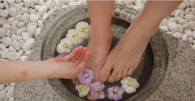
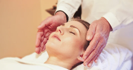
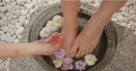
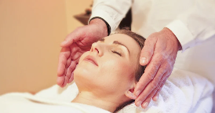

Além de simplesmente cuidar das unhas, é um momento de autocuidado e beleza, onde mãos talentosas transformam suas unhas em pequenas obras de arte. Imagine um ambiente aconchegante, onde a atenção aos detalhes é impecável e o resultado é uma explosão de cores e estilo nas suas mãos. Nossos profissionais não apenas mimam suas unhas, mas também oferecem uma pausa relaxante no seu dia. Deixe-nos cuidar de você, enquanto suas mãos recebem o tratamento VIP que merecem!
Uma jornada rejuvenescedora para os seus pés. Imagine-se em uma atmosfera relaxante, onde especialistas cuidam dos seus pés com carinho e maestria. Cada etapa é um deleite para os sentidos. Nossos profissionais não apenas aprimoram a estética das suas unhas dos pés, mas também proporcionam alívio e relaxamento, mimando cada centímetro dos seus pés. Dê a si mesmo o presente de pés mimados e prontos para conquistar o mundo!
Imagina mergulhar seus pés cansados em um oásis de relaxamento puro. O serviço de escalda pés é como um abraço reconfortante para seus membros inferiores. Água quente, aromas tranquilizantes e mãos habilidosas que mimam cada centímetro dos seus pés. É uma pausa merecida para aliviar o estresse diário, proporcionando não apenas conforto físico, mas também uma sensação revigorante para a mente. Deixe suas preocupações derreterem enquanto seus pés são tratados com carinho e cuidado.
Um banho de energia restauradora para o seu ser. Imagine um momento em que você se entrega a um fluxo suave de toques terapêuticos, canalizando uma energia vital que revitaliza corpo e mente. Em uma atmosfera tranquila, os praticantes de Reiki guiam essa energia, promovendo equilíbrio e harmonia em todos os níveis do seu ser. É uma jornada de relaxamento profundo, onde o estresse se dissipa, e a energia positiva flui livremente. Deixe-se envolver por essa experiência única, onde a cura se manifesta através da suavidade das mãos e da energia que permeia todo o seu ser.

 



Desperte a beleza, nutra a alma. Aqui o cuidado e o equilíbrio se unem em cada toque.